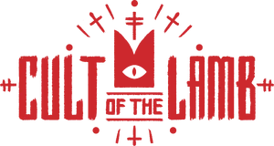

NOVIDADES CHEGANDO PARA A COMEMORAÇÃO DO ANIVERSÁRIO DE UM ANO
Cult of the Lamb e Don't Starve Together juntam forças para uma comunhão profana. Leia mais sobre essa notícia nos destaques ta semana ou clicando aqui.
Cult of the Lamb e Don't Starve Together juntam forças para uma comunhão profana. Leia mais sobre essa notícia nos destaques ta semana ou clicando aqui.
Ubisoft anuncia desenvolvimento de The Division 3
Briar chega com sede de sangue! Conheça a nova campeã do LOLzinho
Apostas esportivas: Gamers Club faz parceria inédita com unikrn
üö®Leviatan dispara na corrida pela contrata√ß√£o de havoc. A transfer√™ncia do duelista de 17 anos para a LOUD j√° era dada como certa, mas nas √∫ltimas horas se tornou improv√°vel pelo desejo da organiza√ß√£o de manter tuyz como duelista e GuhRVN como controlador. MIBR e FURIA ainda estudam a contrata√ß√£o do jogador, mas no momento FerMagoDiez dispara na corrida para t√™-lo em 2024.
üö® Marved chegou em um acordo verbal com a NRG O ex-controlador da Sentinels n√£o permanecer√° na equipe para o pr√≥ximo ano e j√° chegou em um acordo para defender a NRG. Marved voltar√° a jogar ao lado de Crashies e victor com quem foi campe√£o do Masters Reykjav√≠k em 2022, a organiza√ß√£o ainda procura outros dois players para completar a lineup para 2024.
üö®fRoD n√£o seguir√° na comiss√£o t√©cnica da LOUD. O americano de 37 anos est√° totalmente descartado do projeto da equipe para o pr√≥ximo ano. A organiza√ß√£o brasileira procura por novos nomes para assumir a fun√ß√£o de treinado principal para 2024.
“Ele é o melhor jogador do mundo em sua função e demonstrou isso sendo campeão e terceiro do mundo. Faz tempo que o admiro e no Champions onde a LOUD venceu, ele não só ganhou como nos destruiu na partida. Olhei e pensei que um dia gostaria de ter ele. Diz FerMagoDiez sobre Aspas